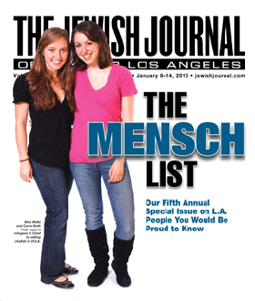

Welcome to my website!
Soon I'll be adding more projects and fun things to this space. In the meantime, check out my linkedin profile to learn more about my professional background
Volunteer Work
When I was an undergrad at UCLA, I co-founded UCLA Challah for Hunger, and a non-profit where student volunteers came together to bake bread and raise funds for victims of genocide. You can read more about our chapter here or read some of my reflections on the schusterman blog. 
Research
I used to do research. Here are some of the articles I've worked on through pubmed and you can read my first article about combining EHR data with community level deteminants of obesity here